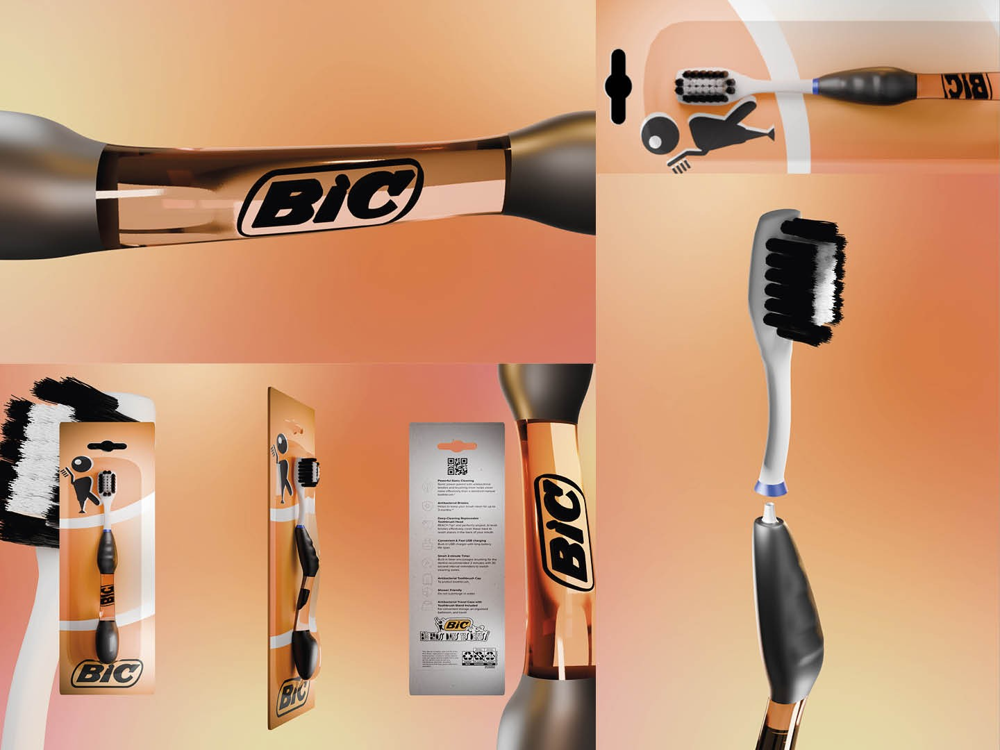

PROJET 03 / 07
Bic Brosse
Bic Brosse est un projet réalisé lors d’un workshop de branding en équipe autour de la marque Bic. L’objectif était de concevoir un produit dérivé crédible en s’appuyant sur l’ADN de la marque : simplicité et accessibilité.
Nous avons imaginé une brosse à dents à tête remplaçable, inspirée de la logique des produits jetables Bic tout en proposant une alternative plus durable.
j’ai réalisé la direction visuelle ainsi que la modélisation et les rendus du produit et de son packaging sur Blender.
Découvrir les autres projets →